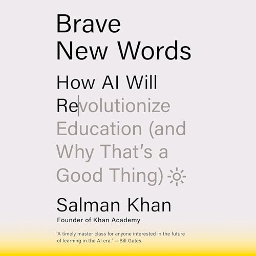

(Audio) Brave New Words, by Khan
Thursday July 18, 2024
“... a teacher has to be adjusted to fit the mind of each boy and girl it teaches ... each kid has to be taught differently.” (Asimov, The Fun They Had, 1951)
The title of this book refers to LLM text generation and Khan's call for “educated bravery” in meeting new technologies, but it also refers to Brave New World, a distopia. In his introduction, Khan mentions Diamond Age, Ender's Game, and The Fun They Had as fiction that “has gone on to inspire very real innovation.” In Diamond Age, three “AI” books are really humans behind the scenes, and the actual AI books train a child army. In Ender's Game, the educational technology serves the goal of genocide. And in Asimov's The Fun They Had, the joke is that AI education would make children long for the current world of schooling. I'm fascinated by the same fiction as Khan. I also think of the Star Trek post-scarcity world (1, 2) as an inspiration. I think Khan is right that LLMs present opportunities, but they also face persistent challenges of education.
There is a kind of “AI exceptionalism” that imagines generative AI as immune to problems faced elsewhere. For example, Khan criticizes Google for having ads. But will commercial LLMs remain disinterested? Khan Academy doesn't offer its Khanmigo AI tutor for free to students because of the cost of AI inference, and it's hard to imagine that LLMs are permanently immune to the attentions of advertisers. And while Khan speaks glowingly of Khanmigo, there is already at least one example of a failed AI ed-bot effort.
More generally, Khan would have education and LLMs as somehow beyond having a point of view, absolutely impartial. Researchers have worked hard on “alignment” that creates this illusion, and certainly a Socratic approach can have value in education. But fundamentally there is no impartial view of the world, and the effect in aiming for one is to allow the inane while preventing progress.
Khan wants to engage students by “incorporating their interests” in ways that are superficial and misleading. One way to fail in this is to imagine content as irredeemably rigid, and try to apply a false veneer. Another way is to imagine there is no content in particular worth focusing on.
Khan gives one example of imagining a soccer coach modeling goals scored with a polynomial, and then asking for the degree of this polynomial and the leading coefficient. This is a weak trick at best, and doesn't at all get to why anyone would care about the question. Applications can be motivating, but this one is so artificial that it seems more likely to damage credibility.
Later Khan imagines restructuring a class's study of World War 2 through a focus on baseball, in a way that seems to suggest that baseball was just as important an aspect of World War 2 as anything else. I could see a research project on this narrow subject for an interested student, but I also think that the bigger features of WW2 should not be deprioritized in order to pander to interests.
One theme here is that part of education is learning what's interesting about things you weren't previously interested in. You shouldn't come out of a class with only the same interests that you went in with.
On history specifically, there's probably a lot more to discuss. Khan offers that “it is impossible to engage in calculus if you don’t know Algebra 2 well, but one can imagine engaging in college-level history even without a strong foundation in history from high school.” I don't know whether all history teachers would agree. To me, to the extent that this is true, it suggests a problem with history as a discipline at least as it is taught. I think we should ask more of history, make more connections, draw more conclusions, have more of a sense of both the theory and application of history. I think Khan is imagining history as if, were it math, in high school students would learn one table of equations and then in college learn a second table of equations, never learning what they mean or how to use them. Perhaps because lessons learned from history can have a political interpretation, history is kept in schools with its hands tied? And so we repeat the errors of the past.
In attempting to be impartial, existing curricula can become dogma. Khan is so focused on how to teach everyone Pre-Algebra, Algebra 1, and Algebra 2, that there doesn't seem to be room for re-thinking our choices in what we teach. The “how” of education is important, but I think the “what” and “why” are keystones, and at least as in need of attention in light of technological advancement.
One pet peeve of mine is titles that are not conceptually coherent. This is the case for Pre-Algebra, Algebra 1, and Algebra 2. These are not good titles for courses. They reflect a bulk-frozen structure that we should be embarrassed to offer students. Imagine if a student submitted an outline so lousy, where the top-level bullets were "first stuff," "second chunk," and "last bits." We should expect more clarity of thought. No student should be given a grab bag of things to learn without better organizing concepts and rationale, and that starts at the level of course titles.
I suspect much of what is taught in schools could be improved (dropped, modified, added to). This is not necessarily easy to do (New Math?) but there have been improvements over time and I expect they can be extended. It has become rare for students to memorize and recite Against Idleness and Mischief, for example, while calculus, which used to be exclusively a university topic, is now encountered by many in high school. Improving what is taught should get more attention.
It seems like AI may move some classroom setups in directions that feel old-fashioned: More in-person writing and tests, more focus on spoken communication. Perhaps it will seem more obvious that teachers are a specific type of manager, which has always been the case though not always widely acknowledged. The toolkit expands.
